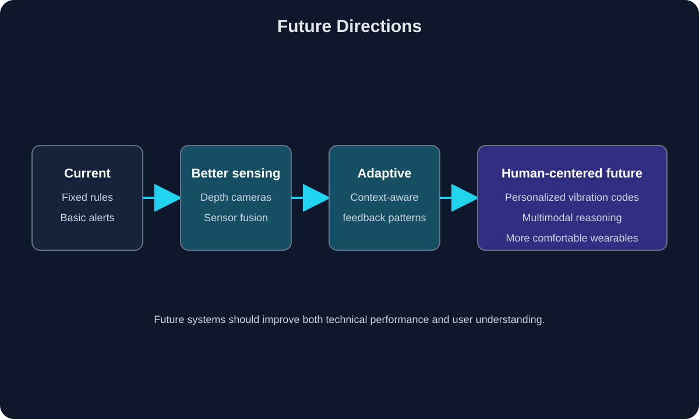

Future directions and conclusion
Where Could This Research Go Next?
Summarize what the tutorial demonstrated and discuss how future systems could make vision-guided haptic feedback more accurate, useful, and comfortable.
What we learned
Summarize the relationship between computer vision, spatial representation, haptic encoding, embedded hardware, and user perception.

Figure 1. Replace this caption with the source information.
Future research directions
- Personalized vibration mappings
- Adaptive feedback based on user preferences
- Improved depth estimation and sensor fusion
- Lower-latency embedded processing
- More comfortable and energy-efficient wearable hardware
- Evaluation with visually impaired users in realistic environments
Research groups and laboratories
Introduce laboratories, universities, or research groups currently working on haptics, assistive technology, computer vision, or human-computer interaction. Link each organization to a reliable source.
Conclusion
Write your final argument here. Emphasize that detecting objects is only one part of the problem; the system must also transform visual information into feedback that is timely, understandable, and safe.